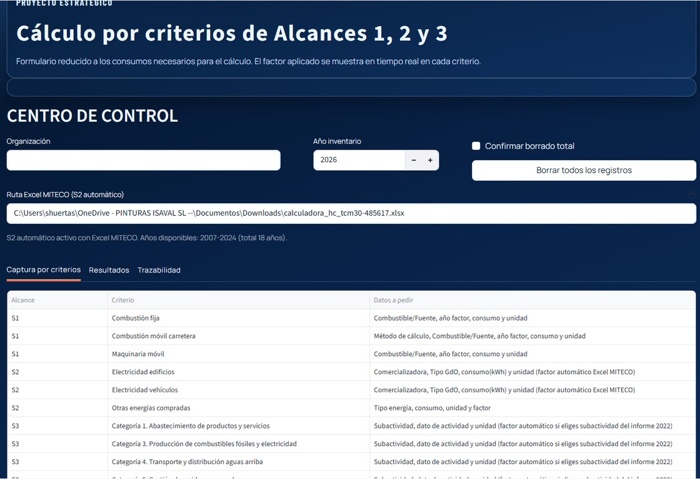
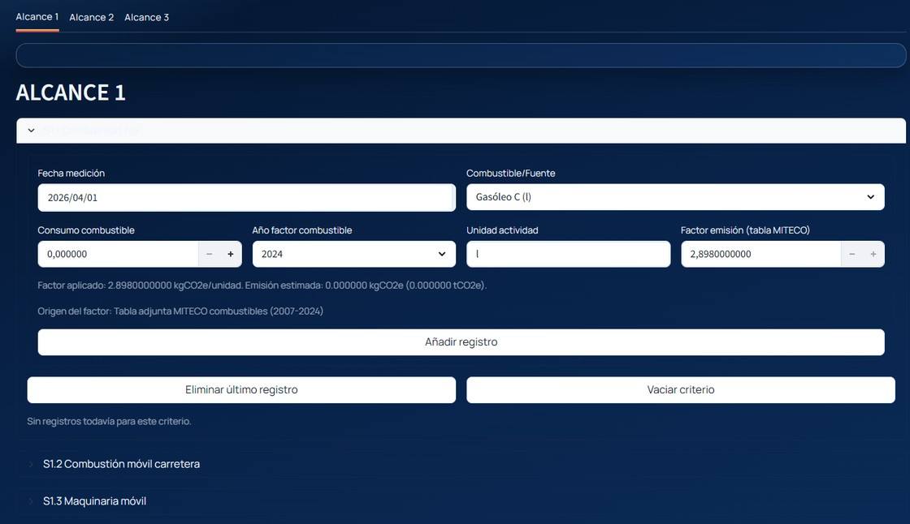
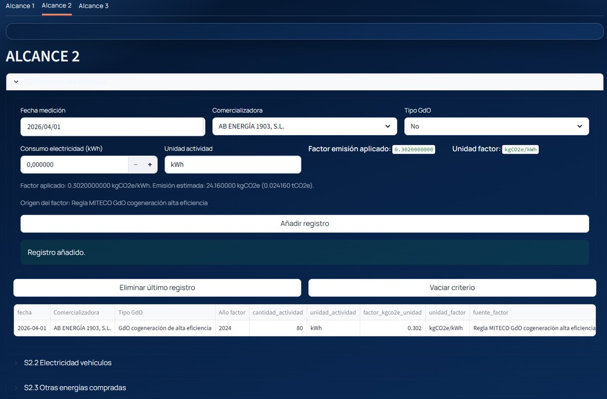
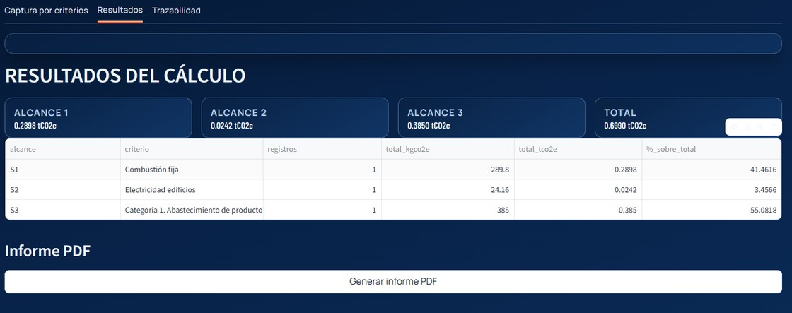

In-house carbon footprint calculator for Isaval
Objective: replace an annually outsourced consultancy process with an internal application able to calculate Scopes 1, 2 and 3, generate a technical report and prepare the company to automate the process later using internal systems.
The project starts from three clear drivers: remove a recurring consultancy cost, reduce internal administrative workload and gain autonomy over a legal and sustainability requirement.
What has been built
The application was created by studying MITECO rules for Scopes 1 and 2 and by leveraging historically validated criteria from the company’s previous carbon footprint reports for Scope 3.
The tool allows users to enter consumption data manually, execute the emissions calculation and generate a final technical report similar to the one previously produced by the external consultancy. The next intention is to connect the tool to ERP and Docuware so the process moves closer to automatic and continuous monitoring.
What the logbook confirms
- The methodological backend already covers Scopes 1, 2 and 3 with implemented validation and calculation logic.
- The application already generates a corporate PDF with methodology, results, traceability and appendices.
- Technical blocks such as OCR, dual Scope 2 reporting and ETL base connectors have already been completed.
- The latest validation shows deviations no greater than 0.001% compared with reports previously delivered by consultants.
Why it matters
- It removes a recurring annual spend of 5,000-6,000 euros.
- It reduces the administrative time required to gather and process data.
- It internalizes a sensitive compliance and sustainability capability.
- It prepares the company for a much more continuous reading of emissions over time.
System screenshots

Capture-by-criteria view and control center for the Scope 1, 2 and 3 calculation process.

Manual entry of consumption and parameters for Scope 1.

Electricity data capture and methodological options for Scope 2.

Subactivity-driven capture flow for Scope 3.

Consolidated calculation results and final PDF generation from inside the application.
Generated report
The application does more than calculate. It also produces its own technical report with cover, index, results, methodology, traceability and appendices, in a format already very close to the document previously supplied by the consultancy.
Attached sample report:
media/informe-huella-organizacion-2026.pdf
Conclusion
The proposal turns an outsourced periodic obligation into a precise and scalable in-house capability. Its value lies in the savings, the agility and the autonomy the company gains over a process that is increasingly relevant for regulation, sustainability and reputation.